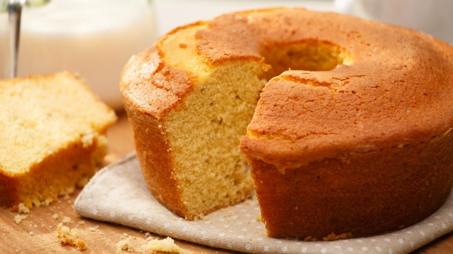

Bolo

Bolo de fubá vapt-vupt
Opção deliciosa para o café da tarde.
Ingredientes
- Açúcar
- Farinha de trigo
- Leite
- Fubá
- Ovos
- Fermento
Modo de Preparo
- Pré-aqueça o forno. Misture os ingredientes líquidos por cerca de 2 minutos.
- Em um refratário junte os ingredientes secos e líquidos misturando muito bem.
- Coloque a massa em uma forma untada e leve ao forno por aproximadamente 35 minutos.